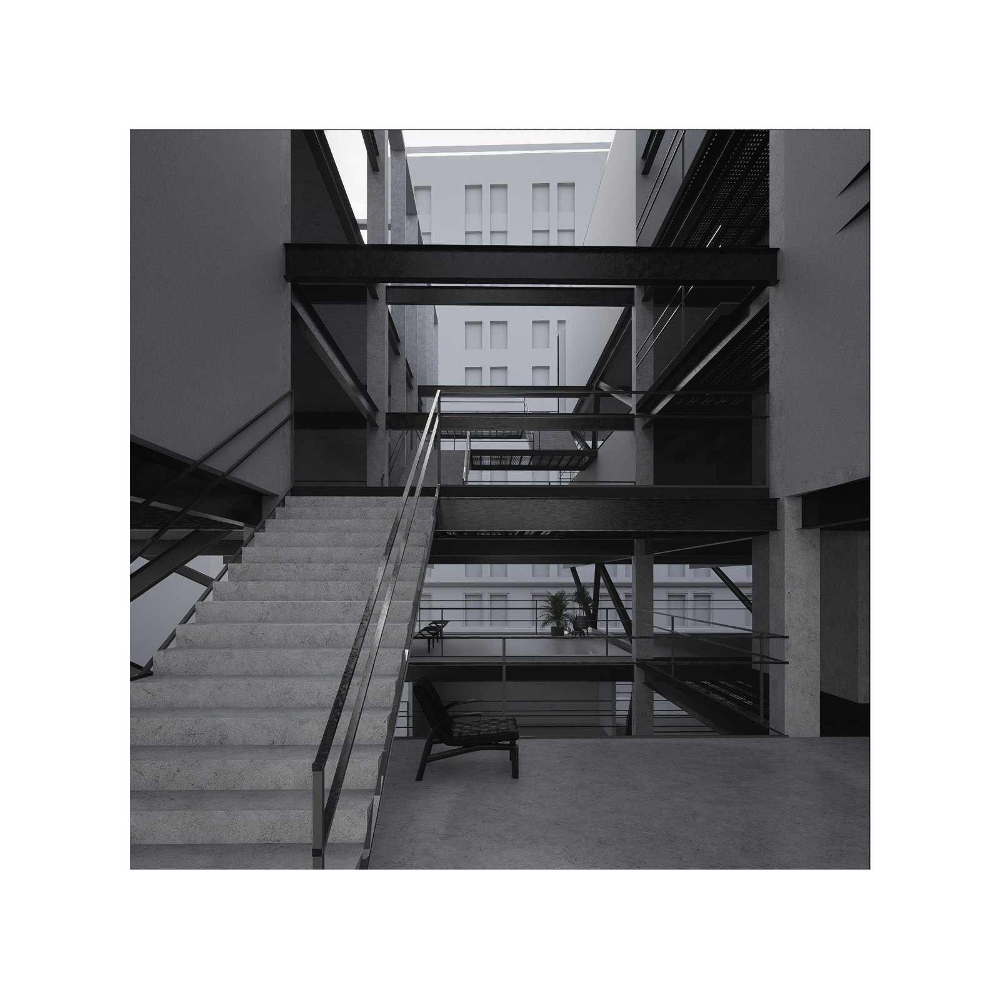
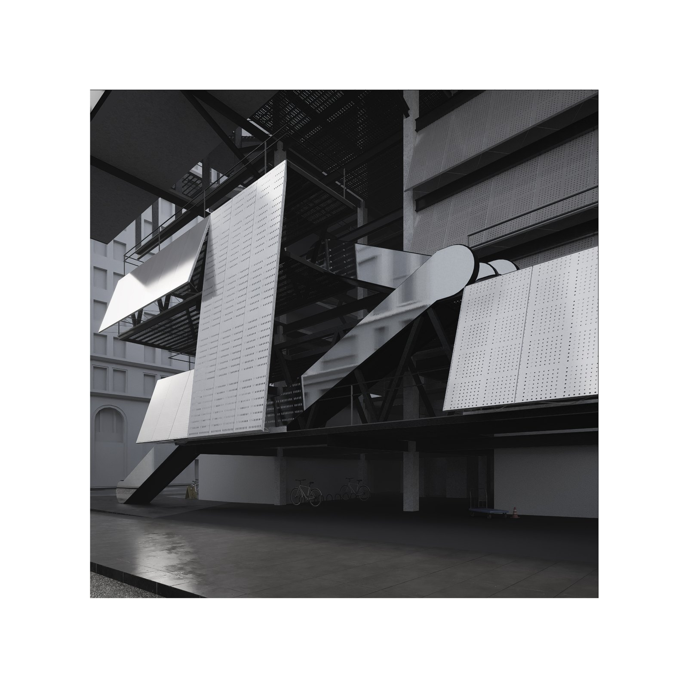
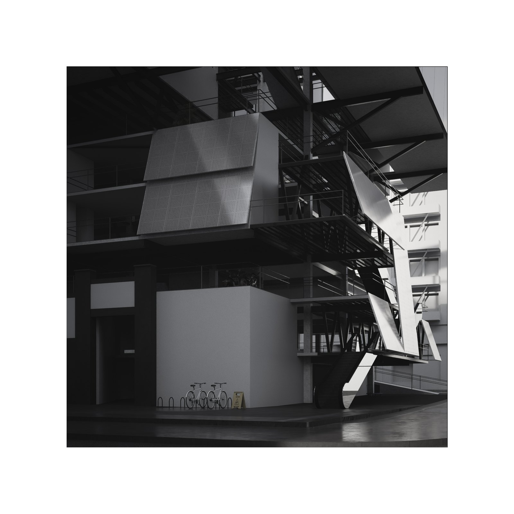
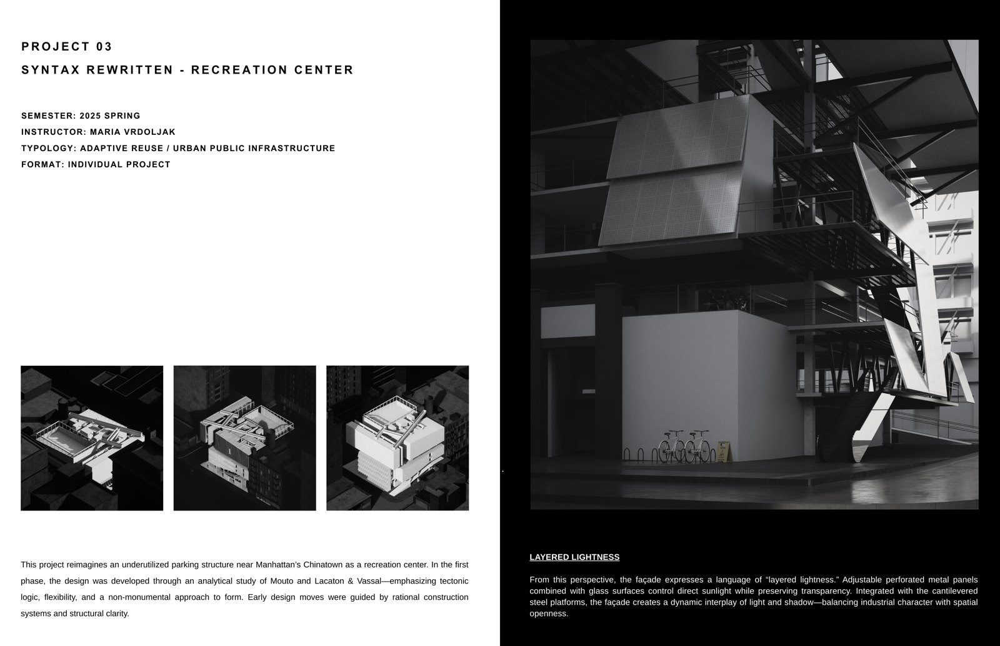
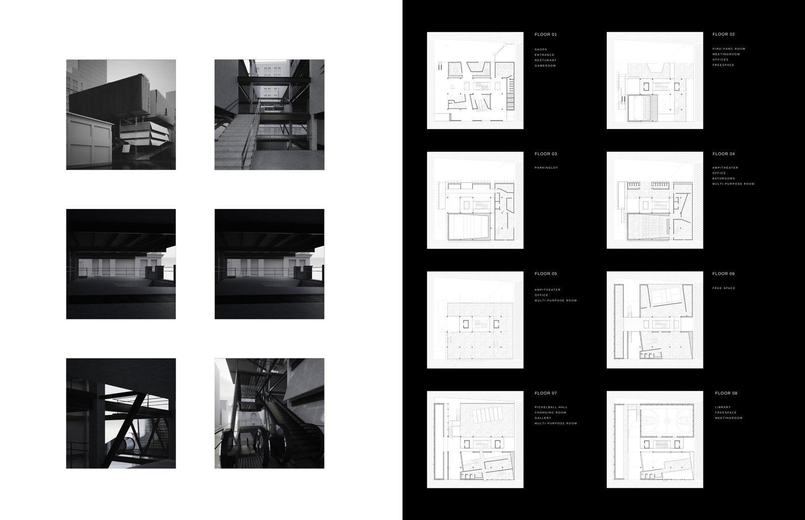
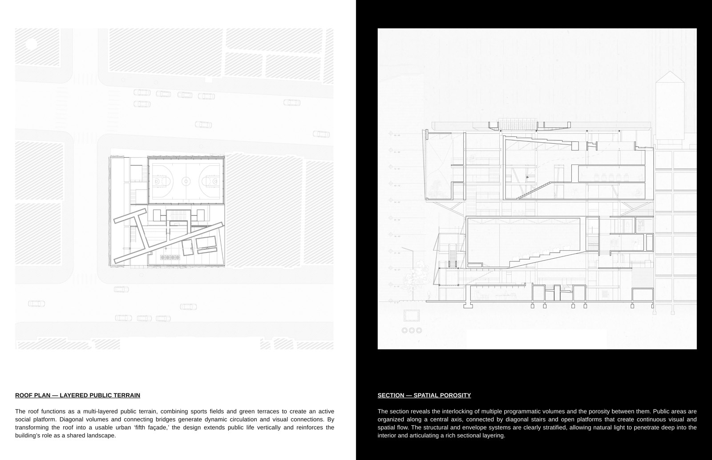
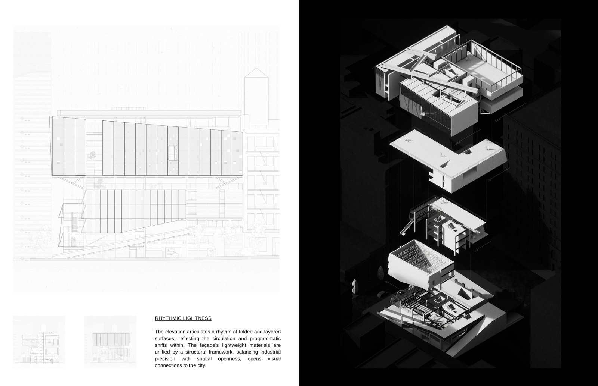
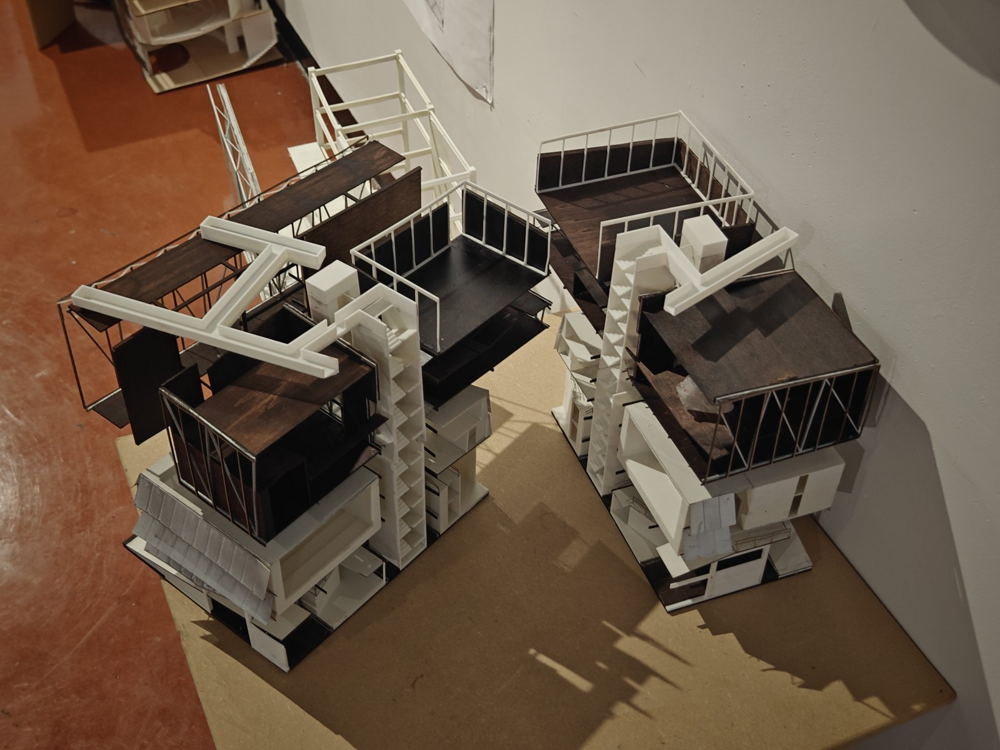
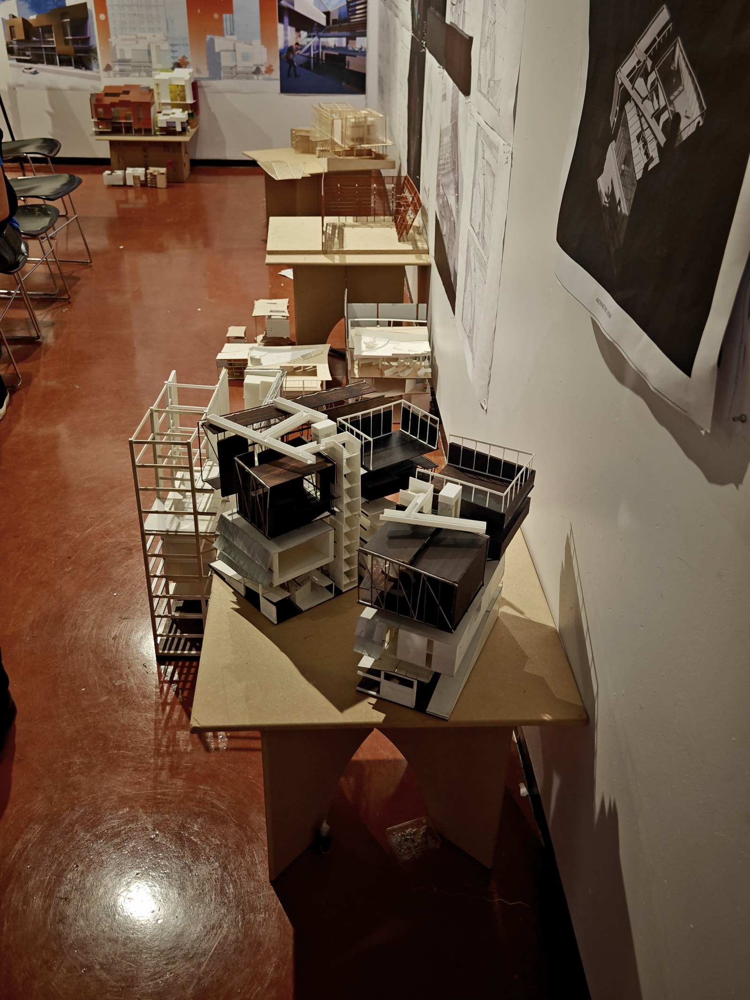

Syntax Rewritten takes an existing structure as a grammar to be re-read and re-written. Rather than erasing the building, the project keeps its load-bearing “syntax” and inserts a new public program — a recreation center — that negotiates between the inherited frame and contemporary use, letting old and new structural logics remain legible side by side.
Syntax Rewritten 把一座既有建筑视为一套可被重新解读与改写的“语法”。项目不抹除原建筑，而是保留其承重“句法”，植入新的公共功能——一座活动中心——在既有框架与当代使用之间斡旋，让新旧结构逻辑并置而清晰可读。









